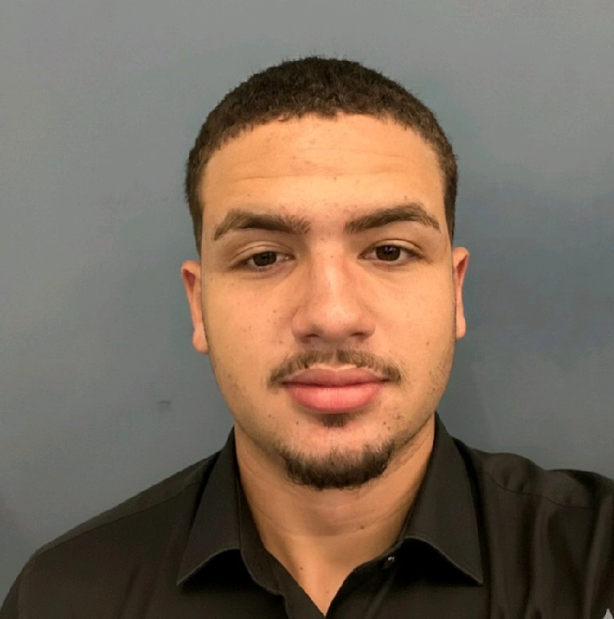

Sobre Min
Sou um entusiasta da tecnologia movido pela resolução de problemas e pelo aprendizado contínuo. Atualmente, concilio a graduação em Engenharia de Software na UNICV com a experiência prática como Dev Trainee na DB1, onde tenho a oportunidade de vivenciar o desenvolvimento ágil em um ambiente de alto nível técnico. Minha jornada é focada em transformar conhecimento teórico em soluções reais, aplicando as melhores práticas de engenharia desde o início da minha carreira. Tenho um interesse especial em entender a arquitetura de sistemas e em como o software pode impulsionar resultados de negócios. Sou movido por desafios, valorizo a colaboração em equipe e busco sempre aprimorar minhas competências técnicas e interpessoais.
Minha jornada é focada em transformar conhecimento teórico em soluções reais, aplicando as melhores práticas de engenharia desde o início da minha carreira. Tenho um interesse especial em entender a arquitetura de sistemas e em como o software pode impulsionar resultados de negócios. Sou movido por desafios, valorizo a colaboração em equipe e busco sempre aprimorar minhas competências técnicas e interpessoais.
